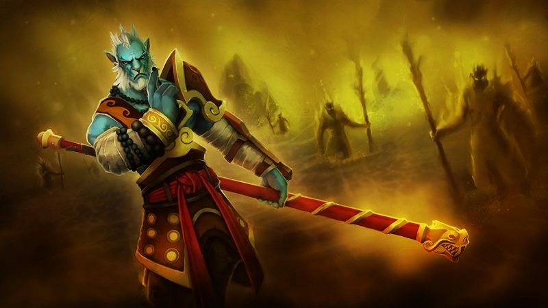

Dota 2 Lore
Phantom Lancer, Pahlawan pertama dari Pole
Sept 14, 2017 views : 3,487,489 Perang bukanlah hal yang diinginkan oleh semua orang. Namun, pada kenyataannya perang selalu datang di saat yang tidak kita duga. Inilah satu pelajaran penting yang seharusnya di pahami oleh para penduduk Pole, sebuah kota kecil yang berada jauh dari peradaban dan negara besar lainnya. Walaupun dikenal sebagai bangsa yang menghindari konflik, para penduduk Pole adalah pemburu yang sangat handal. Mereka mampu memancing di perairan yang dipenuhi oleh ikan raksasa dan hutan lebat tanpa rasa takut akan apapun. Salah satu pemburu dari kota tersebut yang paling dikenal adalah Azwraith, seorang nelayan yang kekuatan dan keberaniannya diakui oleh semua penduduk Pole.
Berlawanan dengan kehidupan di Pole yang penuh perdamaian, sebuah negara yang terletak tidak jauh dari kota tersebut sedang berada di tengah perebutan kekuasaan. Di tengah peperangan tersebut, Vorn, salah satu penyihir kerajaan, menggunakan sihir untuk membantu sebagian pasukannya yang masih bertahan hidup melarikan diri ke dalam hutan dan meninggalkan tempat tinggal mereka yang kini telah hancur. Melihat tempat tinggal mereka hancur karena perang pasti membuat siapapun merasa putus asa. Namun, Vorn berhasil meyakinkan pasukannya untuk terus masuk ke tengah hutan hingga tiba di tempat yang jauh lebih aman. Dalam kondisi letih dan penuh dengan luka, Vorn tiba di hadapan gerbang Pole, sebuah kota yang tidak pernah dikenal sebelumnya. Sang penyihir kemudian memohon kepada penduduk Pole untuk memberikan pasukannya tempat beristirahat, sebuah permintaan yang berhasil dikabulkan oleh para petinggi Pole, dengan syarat mereka harus segera pergi setelah mendapat istirahat yang cukup.
Walaupun Vorn bersikap baik di hadapan para penduduk Pole, sebenarnya dia berencana untuk menguasai kota tersebut. Pengaruh dari salah satu ancient ternyata telah menguasai pikirannya sehingga Vorn menjadi haus akan kekuasaan, dan kehancuran tempat tinggalnya justru membuat dia harus memiliki sebuah kerajaan baru. Saat tiba waktu bagi dirinya untuk pergi dari Pole, Vorn justru memerintahkan pasukannya untuk menyerang kota tersebut dan hanya dalam satu malam dirinya telah merubah tempat yang dahulu sangat tenang menjadi medan pertempuran. Walaupun pasukan Vorn menyerang secara tiba-tiba di malam hari, Azwraith dengan cepat langsung mengambil perlengkapan berburunya untuk bertarung bersama dengan teman-temannya. Walaupun mereka belum pernah melawan seorang manusia, kekuatan penduduk Pole ternyata cukup membuat pasukan Vorn kewalahan. Namun, pada akhirnya mereka sadar bahwa hanya masalah waktu sebelum mereka harus menyerah. Pada penghujung malam terpanjang dalam hidup mereka, untuk pertama kalinya para penduduk Pole merasakan arti dari kata peperangan. Bahkan sebuah kota yang memilih untuk hidup damai harus tunduk di bawah kekuatan seorang ancient.

Di bawah kekuasaan Vorn, setiap pemburu Pole termasuk Azwraith harus mengikuti pelatihan khusus agar dapat mempertahankan diri dari serangan negara lain. Keseharian mereka yang dahulu dihabiskan dengan memancing dan berburu kini telah berubah menjadi pelajaran strategi dan teknik bertarung. Walaupun dirinya dengan patuh mengikuti setiap perintah Vorn, dalam hatinya Azwraith memiliki rasa benci yang mendalam kepada Vorn dan bersumpah untuk mengambil kembali tempat tinggalnya.
Jumlah penduduk Pole memang jauh lebih banyak dibandingkan pasukan Vorn, namun, dalam pertarungan pengalaman mereka sangat berbeda jauh. Azwraith harus mencari cara di mana mereka bisa menghindari konfrontasi langsung dan menghabisi satu persatu pasukan Vorn. Untungnya, teknik berperang yang selama ini telah dia pelajari membuat dirinya bisa merancang strategi yang sangat menguntungkan bagi para penduduk Pole. Setelah memiliki rencana, kini para prajurit Pole hanya tinggal menunggu waktu sebelum mereka bisa melakukan pemberontakan dengan Azwraith sebagai seorang pemimpin.